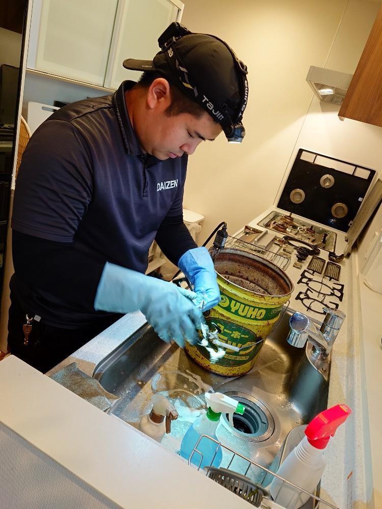
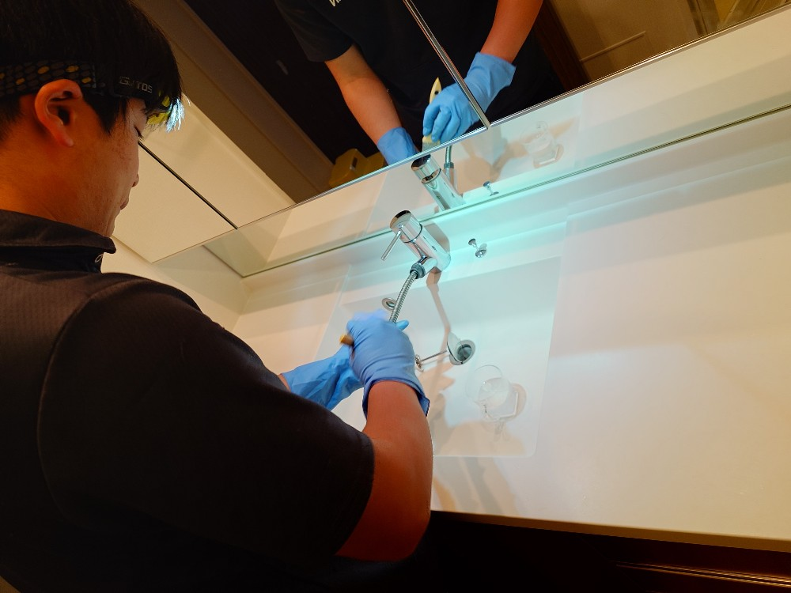
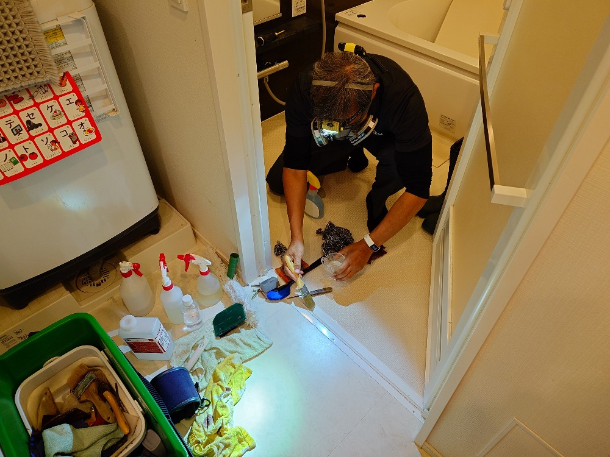
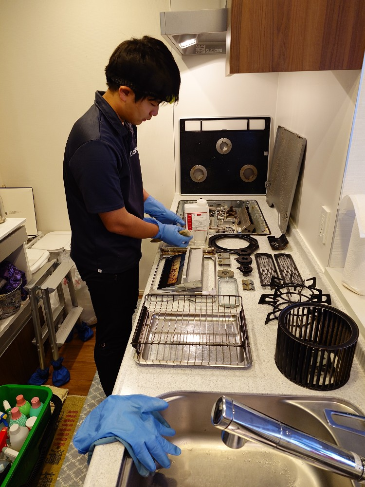
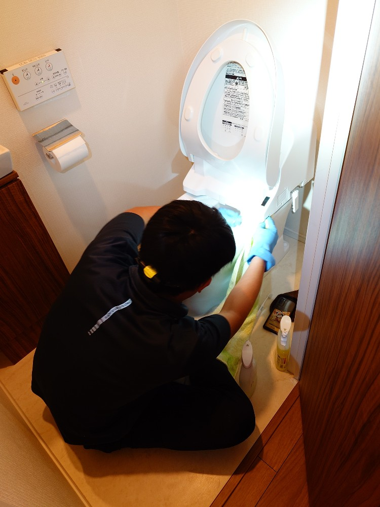
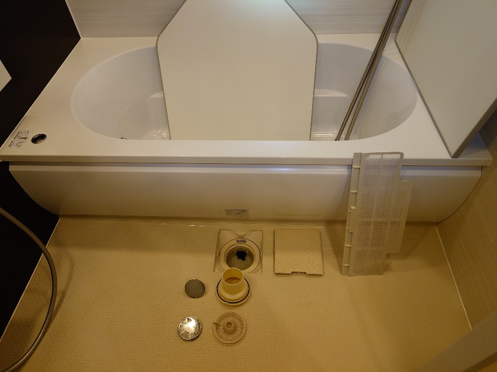
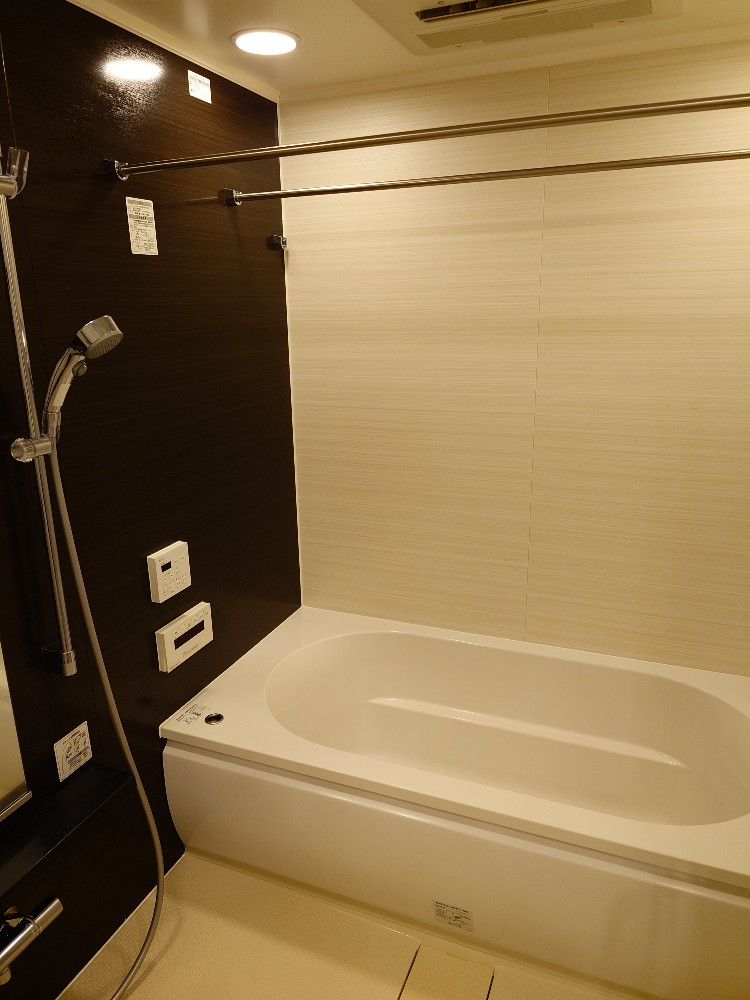
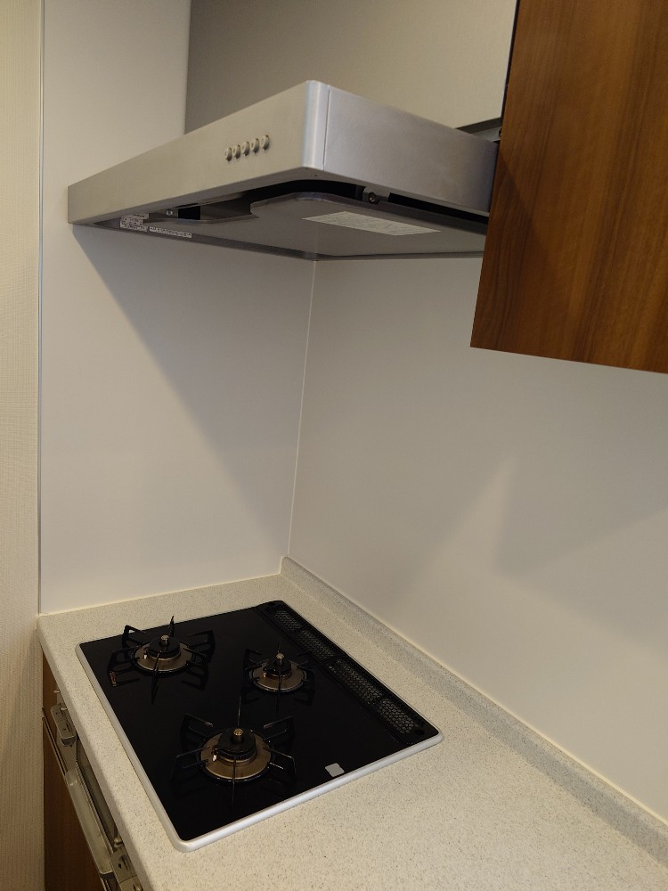
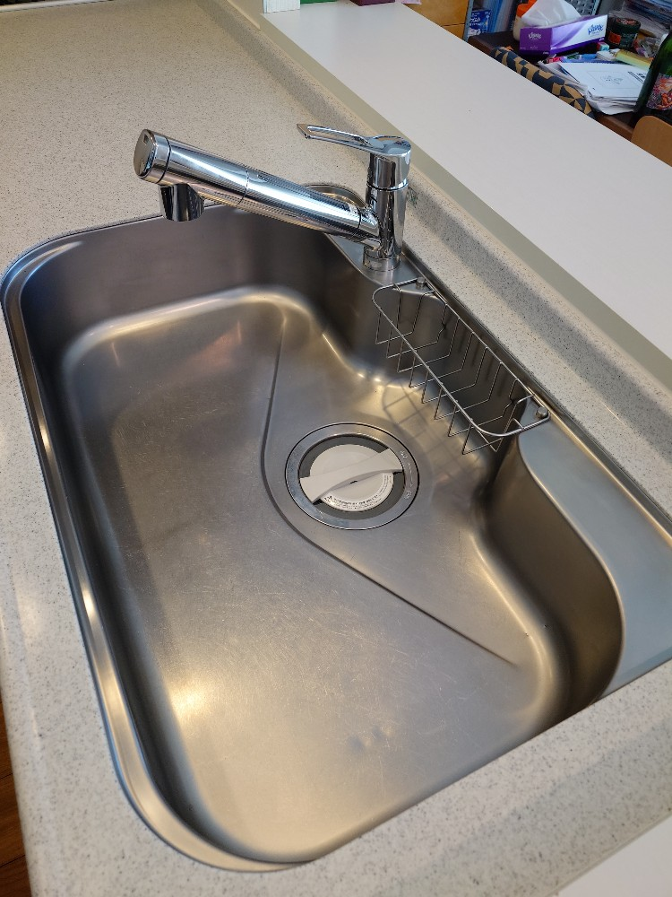

神奈川県藤沢市鵠沼のマンションiさんご自宅の水回りプレミアムクリーニングをしました!

神奈川県藤沢市鵠沼のｉさんご自宅の水回りプレミアムクリーニング5点セット（浴室、キッチン、キッチン換気扇、洗面台、お手洗い）のプロフェッショナル清掃をしました!ｉさんご自宅は、毎年水回りクリーニングを実施なさっていらっしゃいます、今年はDAIZENプロフェッショナルメソッドの出番です、キッチン換気扇、コンロ周り、グリル周り、浴室多機能換気扇、お手洗いウオシュレットなど、各種機器はオール分解して、隅々まで堆積汚れを除去して、除菌クリーニングも実施します!浴室には特にスケール（石鹸カス、湯垢、水垢、水道水のカルシウム）の堆積汚れが多く付着していました。かなり小さめのスケールが各所のすみずみに隙間なく発生しておりましたので、DAIZENプロフェッショナルメソッドを駆使して専用薬剤と手持ちの最小皮スキを用いて手作業で歯医者さんが歯石を除去する方法と同じ様にスケールを1つずつ剥がして行きます、数時間掛かりましたがすっかり綺麗になりました。キッチン、キッチン換気扇、お手洗いも同様にオール分解した器具はいずれも専用薬剤とDAIZENメソッドで隅々まで綺麗にしました。ぜひ水回りプレミアムクリーニングをお試し下さい!








